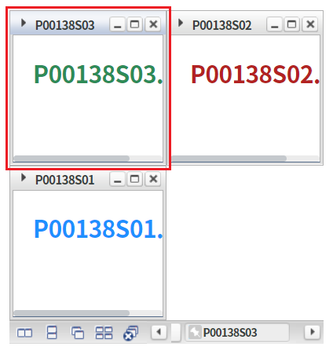
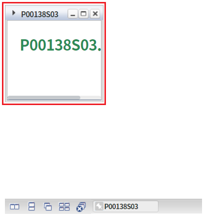
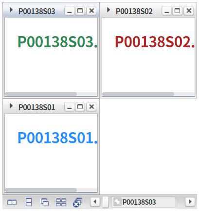
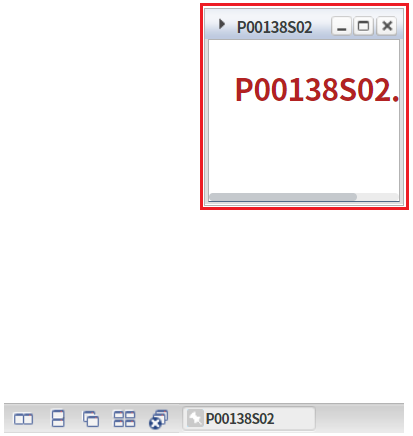
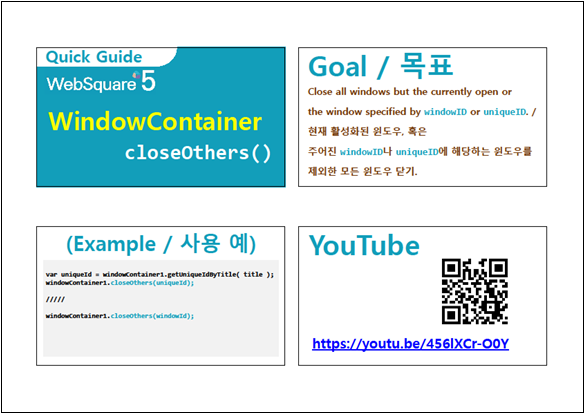

선택된 윈도우 또는 지정한 윈도우를 제외하고 윈도우를 모두 닫는 예제입니다.
선택된 윈도우를 제외, 모든 윈도우 닫기
지정한 윈도우 제외, 모든 윈도우 닫기
닫힌 윈도우를 다시 열고자 하는 경우 버튼 화면 초기화를 클릭합니다.
WindowContainer의 선택된 윈도우를 확인합니다.
타이틀이 [P00138S03]인 윈도우가 선택되어있습니다.
[브라우저(Chrome) 실행 예시]

버튼 선택된 윈도우를 제외, 모든 윈도우 닫기를 클릭합니다.
선택된 윈도우를 제외한 윈도우가 모두 닫힙니다.
타이틀이 [P00138S03]인 윈도우만 열려 있는 것을 확인합니다.
[브라우저(Chrome) 실행 예시]

닫힌 윈도우를 다시 열고자 하는 경우 버튼 화면 초기화를 클릭합니다.
[브라우저(Chrome) 실행 예시]

버튼 윈도우 P00138S02 제외, 모든 윈도우 닫기를 클릭합니다.
타이틀이 [P00138S02]인 윈도우를 제외한 모든 윈도우가 닫힙니다.
타이틀이 [P00138S02]인 윈도우만 열려 있는 것을 확인합니다.
[브라우저(Chrome) 실행 예시]

이 예제는 스크립트 "scwin.btn_ex1_onclick"에 작성되었습니다.
[소스 코드 예시]
//예제 파일의 경우 scwin.btn_ex1_onclick에 작성되어 있습니다. //WindowContainer [wdc_exam1]의 선택된 윈도우를 제외한 모든 윈도우 닫기 wdc_exam1.closeOthers();
이 예제는 스크립트 "scwin.btn_ex2_onclick"에 작성되었습니다.
[소스 코드 예시]
//예제 파일의 경우 scwin.btn_ex2_onclick에 작성되어 있습니다. //WindowContainer [wdc_exam1]의 윈도우 [w_P00138S02]를 제외한 모든 윈도우 닫기 wdc_exam1.closeOthers("w_P00138S02"); //윈도우 생성 스크립트 예시 //5번째 인수 값(w_P00138S02)이 Window ID 입니다. wdc_exam1.createWindow("P00138S02", null, "/page/P00138S02.xml", null, "w_P00138S02", "selectWindow", null, null, null, null, "wframe");
closeOthers( windowId )
createWindow( title , iconUrl , src , windowTitle , windowId , openAction , closeAction , windowTooltip , windowHeaderHTML , options , frameMode )
[웹스퀘어5 SP5 개발 가이드] WindowContainer
링크 : https://docs1.inswave.com/sp5_user_guide/2059d4ce88b2fc16#c65cb349eb266637
[웹스퀘어5 SP5 개발 가이드] WindowContainer - 윈도우 생성
링크 : https://docs1.inswave.com/sp5_user_guide/2059d4ce88b2fc16#d51dab08fdc52bc4
[웹스퀘어5 SP5 개발 가이드] WindowContainer - 특정 윈도우를 제외한 나머지 윈도우 닫기 (closeOthers())
링크 : https://docs1.inswave.com/sp5_user_guide/2059d4ce88b2fc16#fc4526233cb4403e
WindowContainer - 특정 윈도우를 제외한 나머지 윈도우 닫기 (closeOthers())
링크 : https://youtu.be/456lXCr-O0Y
